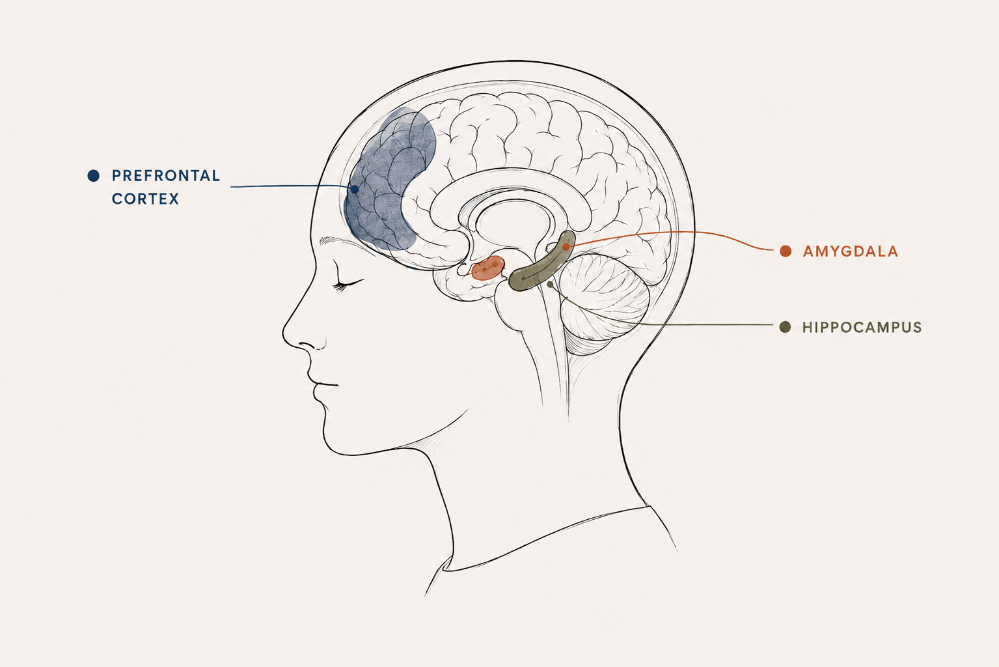
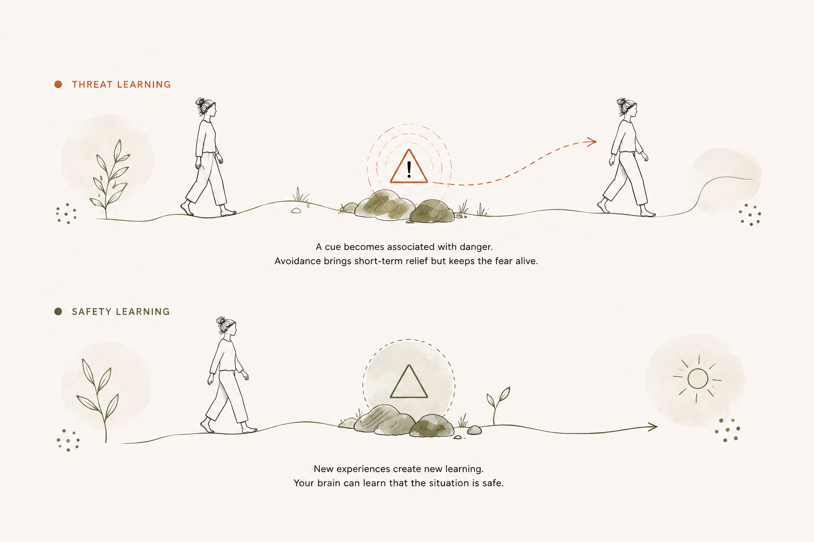
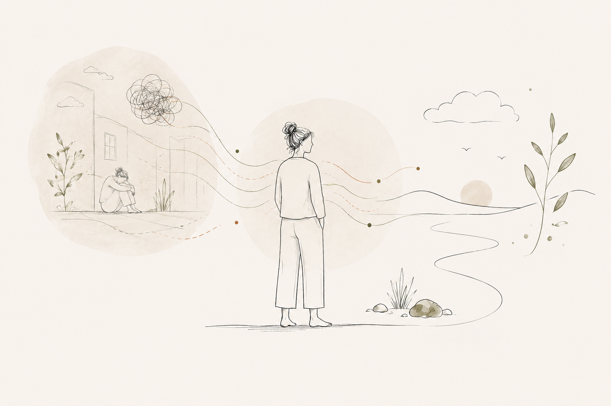
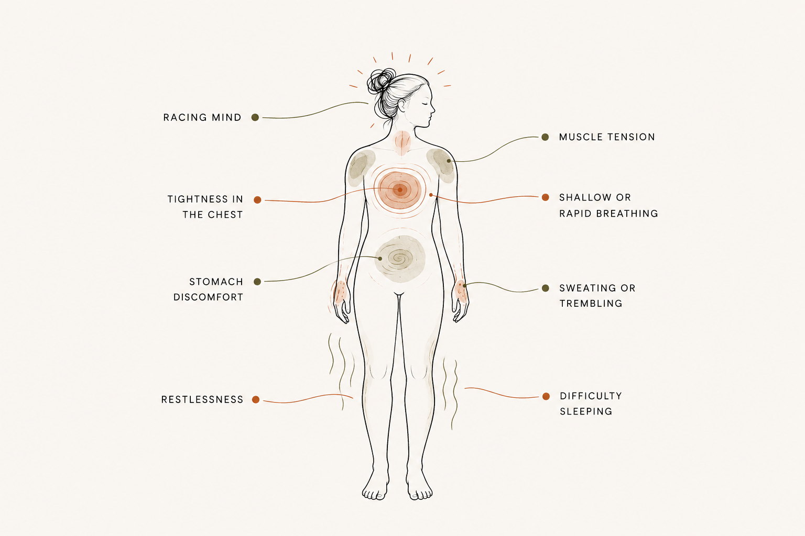
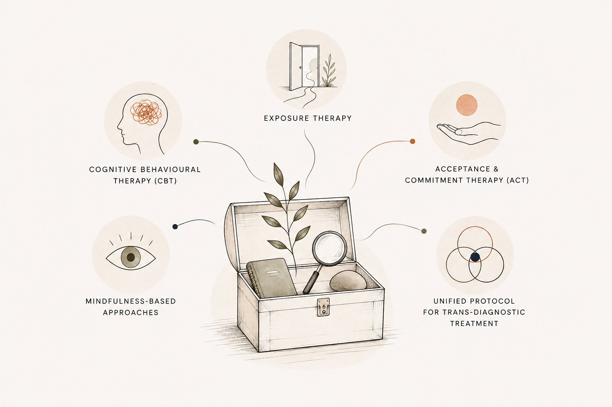
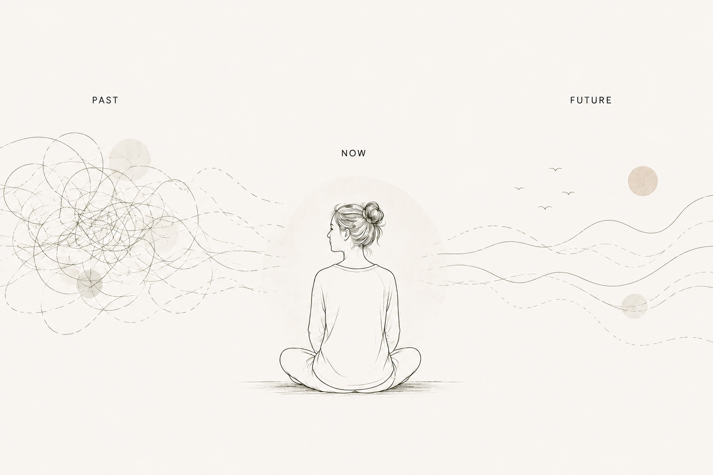
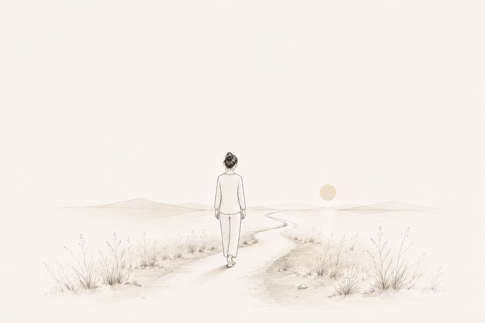

Je kunt weten dat je veilig bent en toch het gevoel hebben dat er iets mis is.
Je kunt tegen jezelf zeggen: "Er is niets om je zorgen over te maken," terwijl je hart tekeergaat, je borst gespannen voelt en je hoofd al bezig is met alles wat er mis zou kunnen gaan. Misschien word je gespannen wakker voordat er überhaupt iets is gebeurd. Misschien speel je gesprekken opnieuw af, anticipeer je op problemen of zoek je voortdurend naar signalen dat er iets niet helemaal klopt. Of misschien ervaar je angst helemaal niet in de eerste plaats als gedachten. Misschien voel je het in je buik, je schouders, je ademhaling of in je onvermogen om stil te zitten.
Angst is niet alleen iets dat zich in je hoofd afspeelt.
Het heeft te maken met je hersenen, je lichaam, je gedrag, je herinneringen en de manier waarop je hebt geleerd om te reageren op onzekerheid en ervaren dreiging. Dat begrijpen kan veranderen hoe je je tot angst verhoudt.
Angst is
niet de vijand
Angst is een aanpassingsreactie.
Je hersenen voorspellen voortdurend wat er hierna zou kunnen gebeuren en bereiden je voor om te reageren op mogelijke bedreigingen. Wanneer je hersenen gevaar waarnemen, of dat gevaar nu lichamelijk, sociaal of psychologisch is, kan je lichaam zich snel mobiliseren.
- Je hartslag kan toenemen.
- Je spieren kunnen zich aanspannen.
- Je ademhaling kan veranderen.
- Je aandacht kan zich vernauwen naar wat op dat moment belangrijk lijkt.
- Je spijsvertering kan tijdelijk op de achtergrond raken.
Dit betekent niet dat er iets mis is met je lichaam.
Sterker nog, het vermogen om alert te worden bij mogelijk gevaar is een van de dingen die ons in leven houdt.
Het wordt moeilijk wanneer dat alarmsysteem te gevoelig wordt, te vaak afgaat of moeilijk te schakelen is. Dat onderscheid is belangrijk. Af en toe angst voelen is een normale menselijke ervaring. Een angststoornis is iets anders: angst of vrees wordt buitensporig, aanhoudend of moeilijk te beheersen en begint aanzienlijk lijden te veroorzaken of het dagelijks leven te verstoren.
Wat gebeurt er eigenlijk
in je hersenen?
Je hersenen wachten niet tot gevaar zich voordoet voordat ze reageren. Ze proberen voortdurend te voorspellen wat er hierna zou kunnen gebeuren. Daarbij maken ze gebruik van informatie uit de wereld om je heen, eerdere ervaringen, herinneringen en wat je hebt geleerd te verwachten.
Bij dit proces zijn verschillende onderling verbonden hersengebieden betrokken. Drie gebieden zijn bijzonder relevant wanneer we spreken over dreiging en angst zijn de amygdala, hippocampus en prefrontale cortex.
De amygdala: signaleren wat belangrijk kan zijn
De amygdala is een kleine structuur diep in de hersenen die een belangrijke rol speelt bij het signaleren en leren van emotioneel betekenisvolle prikkels, vooral prikkels die met dreiging samenhangen. Je kunt haar zien als onderdeel van het systeem in de hersenen dat dreiging detecteert en hiervan leert.
Belangrijk is dat de amygdala niet alleen reageert op dingen die objectief gevaarlijk zijn. Door leerprocessen kunnen signalen die eerder neutraal waren gekoppeld raken aan dreiging.
- Een bepaalde plek.
- Een bepaalde toon in iemands stem.
- Een lichamelijke sensatie.
- Een sociale situatie.
- Zelfs iets dat je herinnert aan een eerdere ervaring.
Wanneer zo'n associatie eenmaal is aangeleerd, kan het tegenkomen van die cue de dreigingsreactie activeren, ook wanneer het oorspronkelijke gevaar niet meer aanwezig is.

De hippocampus: de context onthouden
De hippocampus helpt context te geven. Hij speelt een belangrijke rol bij het geheugen, waaronder het onthouden van waar en wanneer iets is gebeurd.
Dit is belangrijk omdat de hersenen niet alleen hoeven te leren:
"Dit is gevaarlijk."
Ze moeten ook leren:
"Dit was gevaarlijk daar, toen, under die omstandigheden."
De hippocampus maakt deel uit van een netwerk dat helpt onderscheid te maken tussen verschillende contexten en bijdraagt aan het leren van angst en veiligheid. Wanneer dit leren van context niet goed werkt, kan iets dat lijkt op een eerdere bedreiging soms een reactie uitlokken terwijl de huidige situatie eigenlijk veilig is.
De prefrontale cortex: dingen in perspectief plaatsen
Dan is er de prefrontale cortex, een verzameling hersengebieden die betrokken zijn bij hogere cognitieve processen, waaronder aandacht, beoordeling, besluitvorming en aspecten van emotieregulatie. Hij schakelt de amygdala niet simpelweg 'uit'.
In plaats daarvan maakt de prefrontale cortex deel uit van een breder netwerk dat helpt beoordelen wat er gebeurt, context gebruiken en reacties op emotioneel betekenisvolle informatie reguleren. Dit geeft ons een bruikbare manier om iets te begrijpen wat veel mensen met angst ervaren:
Je kunt rationeel weten dat je veilig bent, terwijl een ander deel van je dreigingssysteem nog steeds reageert alsof er iets mis is.
Je bewuste geest kan zeggen:
"Mijn manager heeft eigenlijk helemaal niet gezegd dat er iets mis is."
terwijl je lichaam zich al voorbereidt op de mogelijkheid dat er wel iets aan de hand is.
Dit komt niet doordat je 'emotionele brein' het heeft overgenomen en je rationele brein is uitgeschakeld. De werkelijkheid is interessanter: meerdere onderling verbonden systemen verwerken dreiging, geheugen, context en regulatie tegelijkertijd. Dit is een van de redenen waarom jezelf simpelweg vertellen dat je 'moet stoppen met piekeren' de angst niet altijd te laten verdwijnen.
Weten dat je veilig bent en je veilig voelen zijn niet altijd dezelfde ervaring.
Dus waar komt
het leren van dreiging in beeld?
Stel je voor dat je ooit iets beangstigends hebt meegemaakt in een bepaalde omgeving. Je hersenen leren een verband tussen aspecten van die ervaring en wat er gebeurde. Na verloop van tijd kan een signaal dat eerder neutraal was een beschermende reactie gaan uitlokken, omdat het iets bedreigends voorspelt of je eraan herinnert.
Dit wordt threat learning genoemd: het leren van dreiging.
En belangrijk: leren kan ook de andere kant op gaan.
"Dit is niet langer gevaarlijk."
Dit wordt safety learning genoemd en is een belangrijk onderzoeksgebied binnen angstonderzoek.
Recent onderzoek suggereert dat angststoornissen gepaard kunnen gaan met verschillen in het aanleren van dreiging en het vermogen om veiligheidsleren op te roepen. Dit is een van de redenen waarom behandelingen met exposure zo belangrijk zijn: ze kunnen mogelijkheden bieden voor nieuw leren, in plaats van alleen te proberen jezelf ervan te overtuigen dat je veilig bent.

Het oorspronkelijke gevaar kan al lang verdwenen zijn. Maar de aangeleerde associatie kan blijven bestaan. En soms hebben de hersenen nieuwe ervaringen nodig om wat ze hebben geleerd bij te stellen.
Je lichaam kan reageren op iets wat je herinnert, en niet alleen op wat er op dit moment daadwerkelijk gebeurt.
Hier kunnen ervaringen uit het verleden van belang zijn.
Kan trauma je
gevoeliger maken voor angst?
Bij sommige mensen begint angst of wordt deze veel sterker na periodes van chronische stress, tegenspoed of trauma. Onderzoek ondersteunt een verband tussen trauma in de kindertijd en latere angststoornissen, waaronder gegeneraliseerde angst, sociale angst, paniek en andere angstgerelateerde aandoeningen. Maar hierbij is een belangrijke nuance nodig.
Niet iedereen die trauma ervaart, ontwikkelt angst.
En niet iedereen die angst ervaart, heeft trauma meegemaakt.
Daarom zou ik voorzichtig zijn met de uitspraak dat trauma simpelweg 'vast komt te zitten in je zenuwstelsel'. Een bruikbaardere manier om ernaar te kijken is:
Soms leert je systeem iets over wat het kan verwachten.

Als je herhaaldelijk situaties hebt meegemaakt die onveilig, onvoorspelbaar of overweldigend voelden, kunnen bepaalde situaties, sensaties of relaties gekoppeld raken aan dreiging. Het oorspronkelijke gevaar kan voorbij zijn, terwijl de aangeleerde reactie gevoelig blijft. Dat betekent niet dat er per se één traumatische gebeurtenis is die je moet ontdekken.
Het kan simpelweg nuttig zijn om te vragen:
Wat heeft mijn systeem geleerd te verwachten?
Wanneer angst een
lichamelijke ervaring wordt
Angst wordt niet altijd ervaren als de gedachte "Ik ben angstig."
Soms voelt het alsof je al gespannen wakker wordt. Een hart dat tekeergaat. Een gespannen borst. Een maag die niet tot rust komt. Onrust waardoor stilzitten moeilijk is. Een hoofd dat voortdurend scant naar wat er mis zou kunnen gaan. Moeite met slapen omdat je lichaam niet lijkt te begrijpen dat de dag voorbij is.
Je kunt bijvoorbeeld merken:
- een snel of bonzend hart
- druk of spanning op je borst
- oppervlakkige of snelle ademhaling
- spierspanning
- maagklachten of misselijkheid
- zweten of trillen
- onrust
- moeite met slapen
- moeite met concentreren
- je voortdurend "op scherp" voelen

Deze lichamelijke ervaringen zijn een erkend onderdeel van angst. Angststoornissen gaan vaak gepaard met lichamelijke spanning naast cognitieve en gedragsmatige symptomen.
Maar er is nog een belangrijk onderscheid:
Een lichamelijk symptoom betekent niet automatisch angst te werken.
Pijn op de borst, duizeligheid, kortademigheid en andere lichamelijke klachten kunnen veel verschillende oorzaken hebben. Nieuwe, ernstige of onverklaarde lichamelijke klachten verdienen een passende medische beoordeling.
Wat zegt de wetenschap
eigenlijk?
Er is niet één manier om met angst te werken. In tientallen jaren onderzoek hebben psychologen en onderzoekers verschillende benaderingen ontwikkeld die ons helpen begrijpen waarom angst blijft bestaan en hoe mensen kunnen leren om er anders op te reageren. Hieronder staan enkele ideeën die ik zelf bijzonder bruikbaar vind.
Begrijp de angstcyclus
CGT: Aaron Beck, David Clark en anderen
Cognitieve gedragstherapie (CGT) is een van de best onderbouwde psychologische behandelingen voor angststoornissen. Onderzoek naar verschillende angstgerelateerde stoornissen ondersteunt de effectiviteit ervan.
Een bruikbaar CGT-model is de relatie tussen:
Bijvoorbeeld:
Je manager stuurt: "Kunnen we morgen even praten?"
Je interpreteert dit als:
"Ik heb iets fout gedaan."
Je hart begint sneller te kloppen.
Je leest het bericht meerdere keren opnieuw en voert het gesprek alvast in je hoofd.
Je voelt je iets beter omdat je iets doet om de onzekerheid te beheersen.
Maar de cyclus kan ook het idee versterken dat onzekerheid gevaarlijk is en dat je moet controleren om je veilig te voelen.
Je kunt jezelf afvragen:
- Wat voorspel ik?
- Welk bewijs heb ik daadwerkelijk?
- Wat doe ik op dit moment om onzekerheid te verminderen?
- Helpt dit mij op de lange termijn, of zorgt het er alleen voor dat ik me de komende vijf minuten beter voel?
Ik ben geen klinisch psycholoog en ik bied geen CGT aan. Maar het begrijpen van deze principes kan nuttige psycho-educatie bieden en je helpen patronen in je eigen angst te herkennen.
Beweeg richting wat je vermijdt
Exposure & inhibitory learning: Michelle Craske en collega's
Vermijding is begrijpelijk. Als iets je angstig maakt, voelt het meestal beter om ervan weg te blijven, in ieder geval tijdelijk. Het probleem is dat vermijding je kan verhinderen te ontdekken wat er zou zijn gebeurd als je was gebleven. Dit is een van de redenen waarom exposure een belangrijk onderdeel is van evidence-based behandeling voor veel angststoornissen.
Recent exposure-onderzoek, waaronder het werk van Michelle Craske rond inhibitory learning, is verder gegaan dan het eenvoudige idee dat exposure bedoeld is om angst te laten verdwijnen.
In plaats daarvan kan nieuw leren ontstaan:
"Ik heb deze situatie ervaren en de ramp die ik voorspelde is niet gebeurd."
Of:
"Ik voelde angst en ik kon ermee omgaan."
Exposure is een gestructureerde therapeutische interventie. Dit is dus geen advies om jezelf te overspoelen of plotseling je grootste angst onder ogen te zien. Bij ernstige angststoornissen moet exposure worden uitgevoerd met een daarvoor gekwalificeerde professional.
Soms ligt de weg vooruit niet in het vermijden van het gevoel, maar in geleidelijk leren dat je het kunt ervaren zonder het alles wat je doet te laten bepalen.
Verander je relatie met angstige gedachten
ACT: Steven Hayes en collega's
Acceptance and Commitment Therapy (ACT) biedt een ander perspectief.
In plaats van als doel te stellen:
"Hoe kom ik van deze gedachte af?"
ACT richt zich op het ontwikkelen van meer psychologische flexibiliteit: het vermogen om moeilijke gedachten en gevoelens te ervaren zonder ze automatisch ons gedrag te laten bepalen.
Een eenvoudige ACT-oefening is:
"Ik ga mezelf voor schut zetten."
wordt:
"Ik heb de gedachte dat ik mezelf voor schut ga zetten."
De gedachte is niet verdwenen. Je hebt jezelf niet ervan overtuigd dat de gedachte onwaar is.
Je hebt simpelweg wat ruimte gecreëerd tussen jou en de gedachte.
Oefen met aanwezig zijn waar je werkelijk bent
Mindfulness & MBSR: Jon Kabat-Zinn
Mindfulness-gebaseerde benaderingen bieden nog een nuttige vaardigheid: opmerken wat er gebeurt zonder het onmiddellijk te proberen oplossen of eraan te ontsnappen. Het Mindfulness-Based Stress Reduction (MBSR)-programma van Jon Kabat-Zinn hielp gestructureerde mindfulnesspraktijken binnen de gezondheidszorg te brengen. Onderzoek heeft voordelen gevonden voor angstsymptomen, hoewel de sterkte van het bewijs verschilt per populatie en interventie.
Probeer dit een minuut:
Merk op.
Wat voel je?
Lokaliseer.
Waar merk je het in je lichaam?
Benoem.
Kun je de sensatie beschrijven zonder
er een oordeel over te vormen?
Merk het verhaal op.
Wat voorspelt je hoofd?
Keer terug.
Wat gebeurt er op dit moment werkelijk om je heen?
Het doel is niet:
"Ik moet mijn angst laten verdwijnen."
Het is:
"Kan ik angst opmerken zonder er onmiddellijk op te reageren?"
Leer anders te reageren op moeilijke emoties
The Unified Protocol: David Barlow en collega's
The Unified Protocol hanteert een transdiagnostische benadering en richt zich op emotionele processen die voorkomen bij verschillende angst- en aanverwante stoornissen, in plaats van elke diagnose volledig los van de andere te behandelen. Eén idee is hierbij bijzonder relevant:
Het probleem is niet per se dat je angst ervaart. Het kan ook gaan om de manier waarop je reageert op het ervaren van angst.
- Onderdruk je het onmiddellijk?
- Vermijd je het?
- Zoek je geruststelling?
- Leid je jezelf af?
- Vecht je ertegen?
Of kun je leren de emotie op te merken en bewuster te kiezen hoe je reageert?

Een oefening waar ik zelf
steeds naar terugkeer
The Power of Now: Eckhart Tolle
Een perspectief dat voor mij bijzonder betekenisvol is, is dat van Eckhart Tolle in The Power of Now. Ik gebruik het werk van Tolle niet als wetenschappelijke verklaring voor angst en het is geen vervanging voor evidence-based behandeling.
Wat ik waardeer, is de eenvoud van de vraag:
Wat gebeurt er nu eigenlijk?
Angst leeft vaak in de toekomst.
Wat als dit gebeurt?
Wat als er iets misgaat?
Wat als ik dit niet aankan?
Terugkeren naar het heden lost het probleem soms niet op. Maar het kan helpen onderscheid te maken tussen wat er nu gebeurt en wat je hoofd voorspelt dat later zou kunnen gebeuren.
Voor mij is dat onderscheid ongelooflijk waardevol geweest.
Probeer het zelf
De volgende keer dat je merkt dat je hoofd vooruit begint te racen, pauzeer dan even.
- Voel je voeten op de grond.
- Kijk om je heen.
- Merk je ademhaling op zonder te proberen deze te veranderen.
En vraag jezelf:
Wat gebeurt er nu eigenlijk?
Niet wat er morgen zou kunnen gebeuren.
Niet wat er gisteren gebeurde.
Wat gebeurt er nu?

Waar past somatische
therapie in?
Veel evidence-based werk rond angst richt zich op gedachten, gedrag, vermijding, aandacht en emotieregulatie. Somatische counselling voegt daar een andere invalshoek aan toe:
Wat gebeurt er wanneer je aandacht geeft aan de lichamelijke kant van je ervaring?
We kunnen onderzoeken hoe angst zich uit in je ademhaling, spierspanning, houding, beweging of aandacht en hoe je reageert wanneer die sensaties opkomen. Dit betekent niet dat elke lichamelijke sensatie een verborgen betekenis heeft. En het betekent niet dat we 'trauma uit het lichaam moeten loslaten'. Het betekent dat je leert je reacties nauwkeuriger te herkennen.
We kunnen ook de bredere context onderzoeken: wat je angst meestal triggert, wat je doet wanneer deze opkomt, of bepaalde patronen zijn ontstaan door langdurige stress of moeilijke ervaringen, en wat je helpt om je beter in staat te voelen om te reageren in plaats van alleen maar automatisch te reageren.
Het doel is niet ervoor te zorgen dat je nooit meer angst voelt.
Het is om je te helpen meer bewustzijn en meer keuzevrijheid te ontwikkelen in hoe je reageert wanneer angst opkomt.
Een opmerking over
angststoornissen
Af en toe angst voelen is een normaal onderdeel van mens-zijn.
Een angststoornis is iets anders.
Angststoornissen omvatten angst of vrees die buitensporig, aanhoudend of moeilijk te beheersen is en aanzienlijk lijden veroorzaakt of het dagelijks leven verstoort. Hieronder vallen onder meer gegeneraliseerde angststoornis, paniekstoornis, sociale-angststoornis, agorafobie en specifieke fobieën.
Als je denkt dat je mogelijk een angststoornis hebt, is het belangrijk om een beoordeling te vragen bij een daarvoor gekwalificeerde zorgprofessional of professional in de geestelijke gezondheidszorg. Angstsymptomen kunnen ook overlappen met andere lichamelijke en psychologische aandoeningen.
Somatische counselling is geen vervanging voor diagnostiek of klinische behandeling van een angststoornis.
Ik ben geen klinisch psycholoog en bied geen CGT, psychotherapie of behandeling van gediagnosticeerde angststoornissen.
Je hoeft angst niet
uit te bannen om anders te leven
Angst kan altijd onderdeel zijn van mens-zijn. Soms is het een nuttig signaal. Soms is het een aangeleerde reactie die te gevoelig is geworden. En soms wordt de angst zo ernstig dat professionele behandeling nodig is. Het doel hoeft niet per se een leven te zijn waarin je nooit angst voelt. Het kan erom gaan het gevoel eerder te herkennen. Te begrijpen wat er gebeurt. Te weten wanneer je ergens naartoe kunt bewegen in plaats van het te vermijden. Op te merken wat je lichaam doet zonder onmiddellijk te geloven dat er iets mis is. En na verloop van tijd meer keuze te ervaren in wat er daarna gebeurt.
Angst kan deel uitmaken van jouw ervaring. Het hoeft je leven niet te bepalen.

Als je met angst te maken hebt
Je hoeft niet precies te weten wat je nodig hebt voordat je contact opneemt.
Somatische counselling kan een ruimte bieden om te vertragen, te praten over wat je ervaart en te onderzoeken hoe angst zich zowel in je lichaam als in je leven laat zien.
Ik bied trauma-informed somatische counselling aan in Amsterdam en online, in het Engels en Nederlands.
AFSPRAAK MAKEN →Sources & further reading
CGT heeft een van de sterkste wetenschappelijke onderbouwingen voor angststoornissen en heeft een groot deel van ons huidige begrip van de relatie tussen gedachten, gedrag en emotionele reacties.
Onderzoek naar hoe exposure nieuw leren kan creëren en vermijding kan verminderen, in plaats van uitsluitend te vertrouwen op het verdwijnen van angst.
ACT richt zich op psychologische flexibiliteit, acceptatie, bewustzijn van het huidige moment en handelen vanuit waarden. Onderzoek ondersteunt het gebruik ervan bij angst, terwijl de wetenschappelijke onderbouwing zich verder ontwikkelt.
MBSR bracht een gestructureerd mindfulnessprogramma binnen de gezondheidszorg en is onderzocht bij verschillende populaties en aandoeningen.
Een transdiagnostische behandelbenadering die zich richt op emotionele processen die voorkomen bij angststoornissen en aanverwante aandoeningen.
Een overzicht van angststoornissen, symptomen, bijdragende factoren, evidence-based behandelingen en strategieën voor zelfzorg.